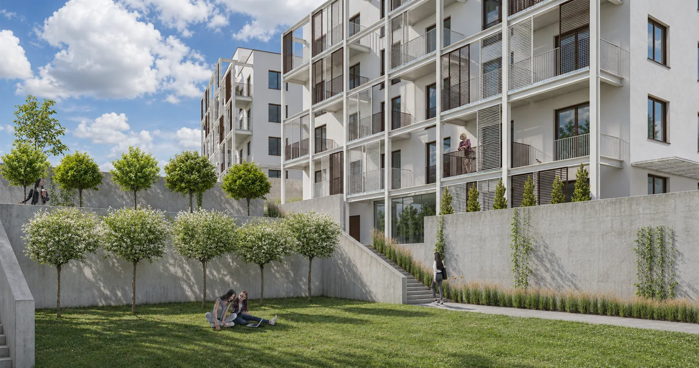
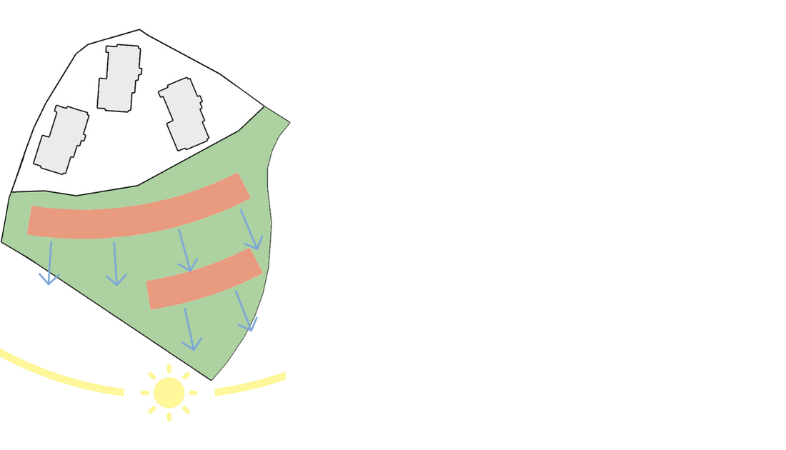
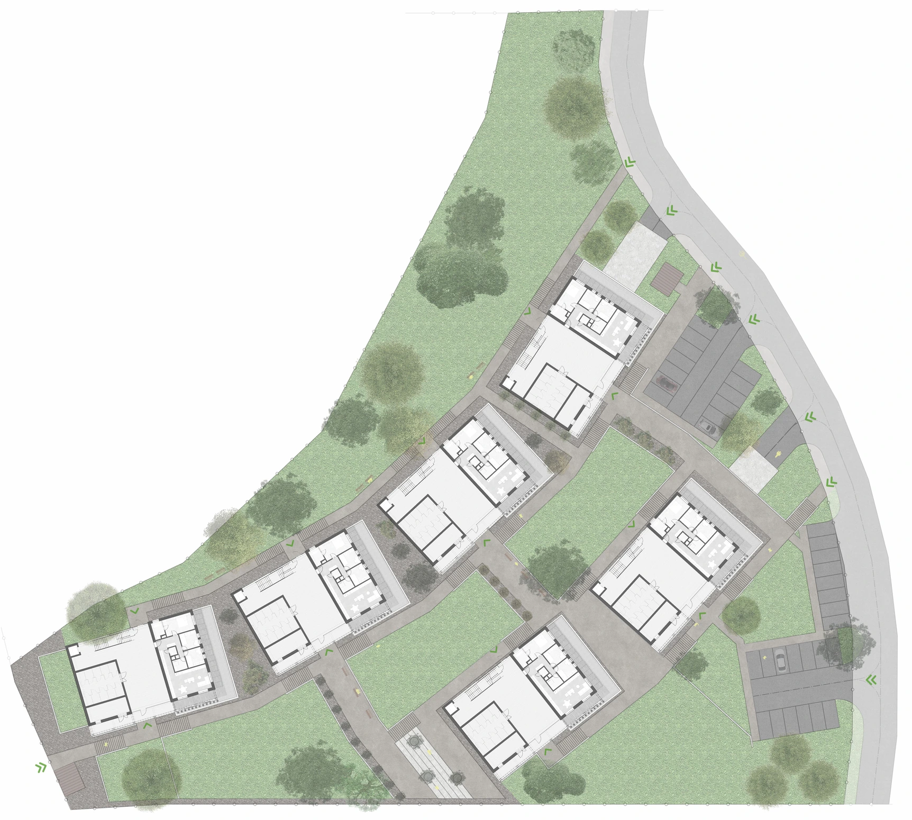
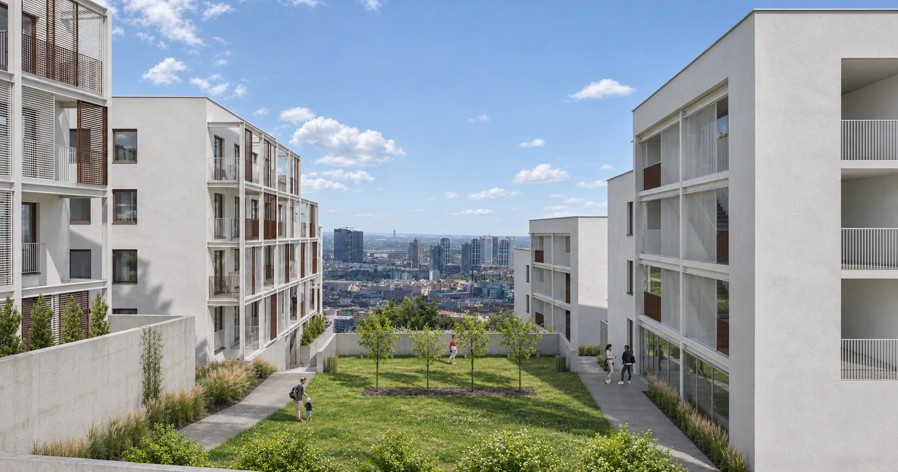

Apartment complex Strážna
Six apartment buildings step across a hillside in Bratislava. Open spaces between them keep the city in view, while a steel frame on the south side of each block makes room for balconies and movable shades.

Massing

Site and landscape
Six smaller buildings frame shared green spaces on the slope. The spaces between them keep the view toward Bratislava open.


Plans, sections and elevations
At ground level, the apartment opens onto a private garden. Above it, the plan repeats in modules. Bedrooms are set apart from the living areas, and the common stair and lift run along the north side.
The ground-floor apartment has direct access to a private garden. Its rooms are separated from the shared entry and circulation space.
Select an A–A or B–B section marker, or an elevation arrow, to open its drawing.